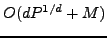

A potential bottleneck when solving Boltzmann transport equations in parallel is the inversion of the streaming operator. The discretized form of this operator is a lower triangular matrix or block lower triangular matrix with small blocks. The solution of these triangular systems by direct methods is inherently sequential. Although various overloading techniques have been used to amortize the costs of these lower triangular solves or ``sweeps'', the practicality of scaling to massively parallel machines with tens of thousands of processors is unclear.
In this talk, we will present new theoretical scaling models for sweeping
algorithms and compare with experiment. In theory, these algorithms have the
potential to scale like
, where  is the spatial dimension of
the problem,
is the spatial dimension of
the problem,  is the number of directions, and
is the number of directions, and  is the number of
processors. When
is the number of
processors. When  is fairly large, it masks the effect of the
is fairly large, it masks the effect of the  term,
whereby delaying the poor asymptotic scaling behavior. This delay may be
adequate in some cases to get practical performance, even up to tens of
thousands of processors. However, some popular parallel sweep algorithms may
scale worse than this best-case theoretical model. This will also be discussed
in the talk.
term,
whereby delaying the poor asymptotic scaling behavior. This delay may be
adequate in some cases to get practical performance, even up to tens of
thousands of processors. However, some popular parallel sweep algorithms may
scale worse than this best-case theoretical model. This will also be discussed
in the talk.